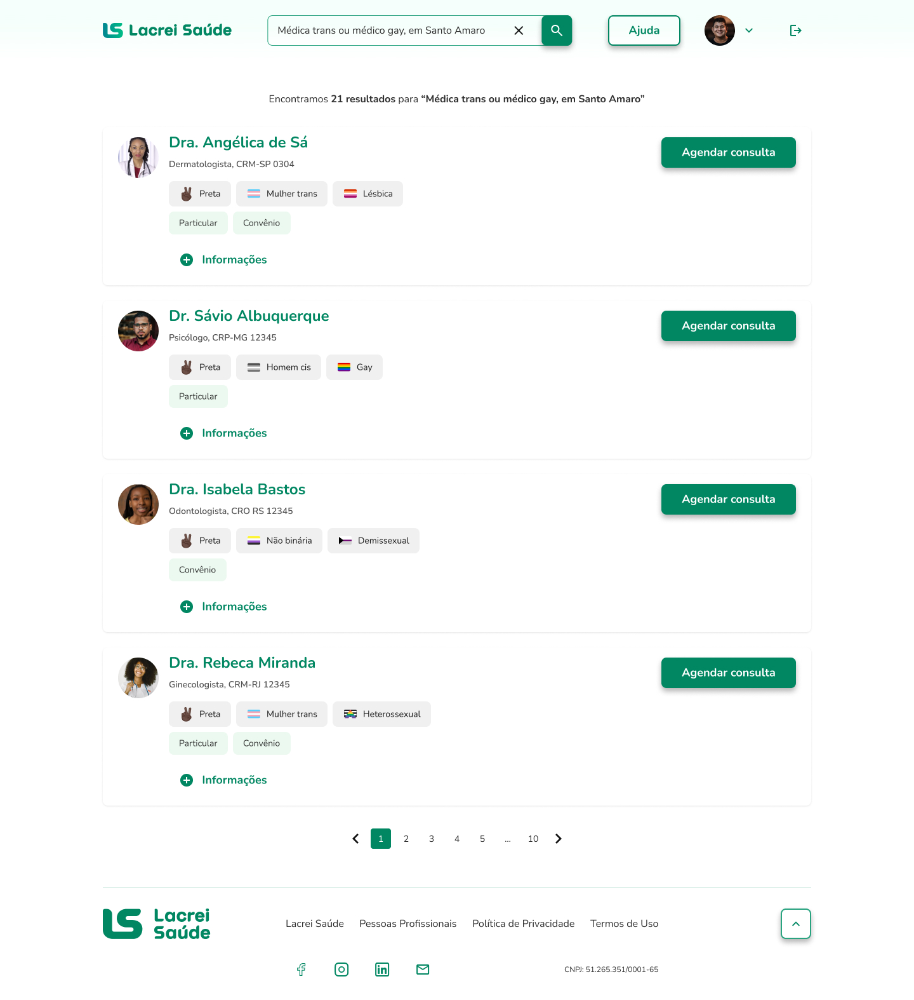
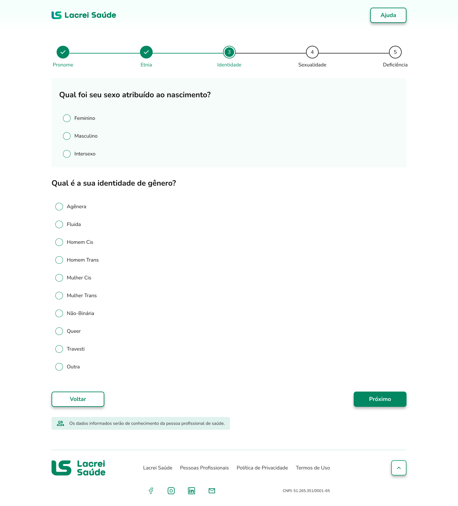
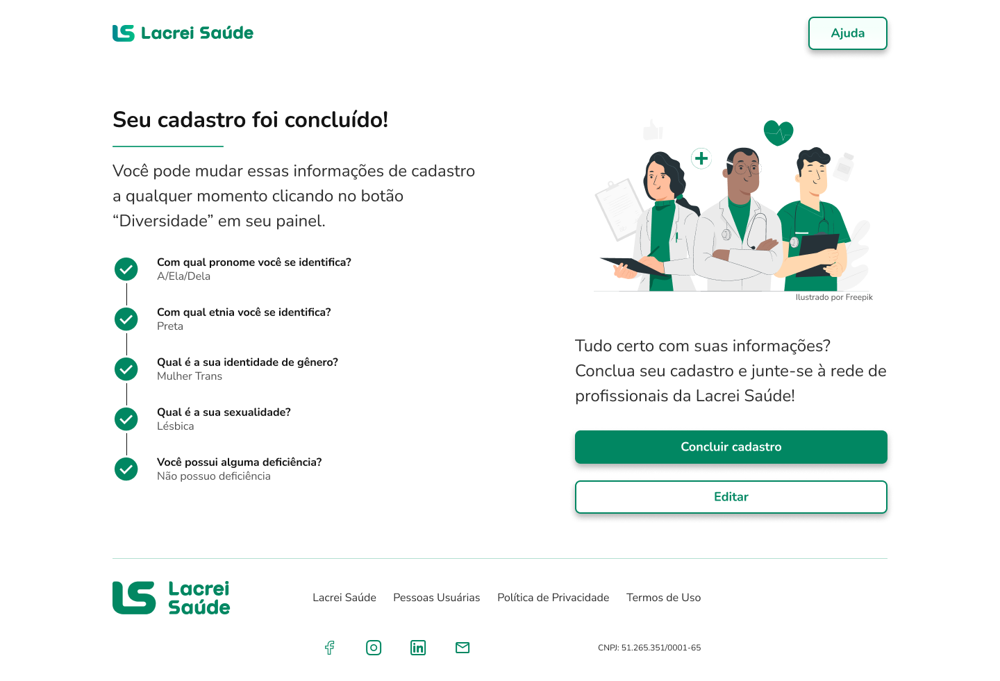
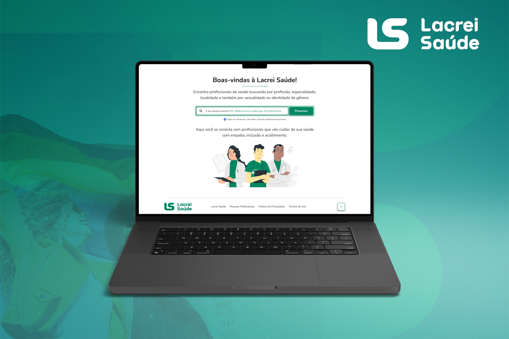
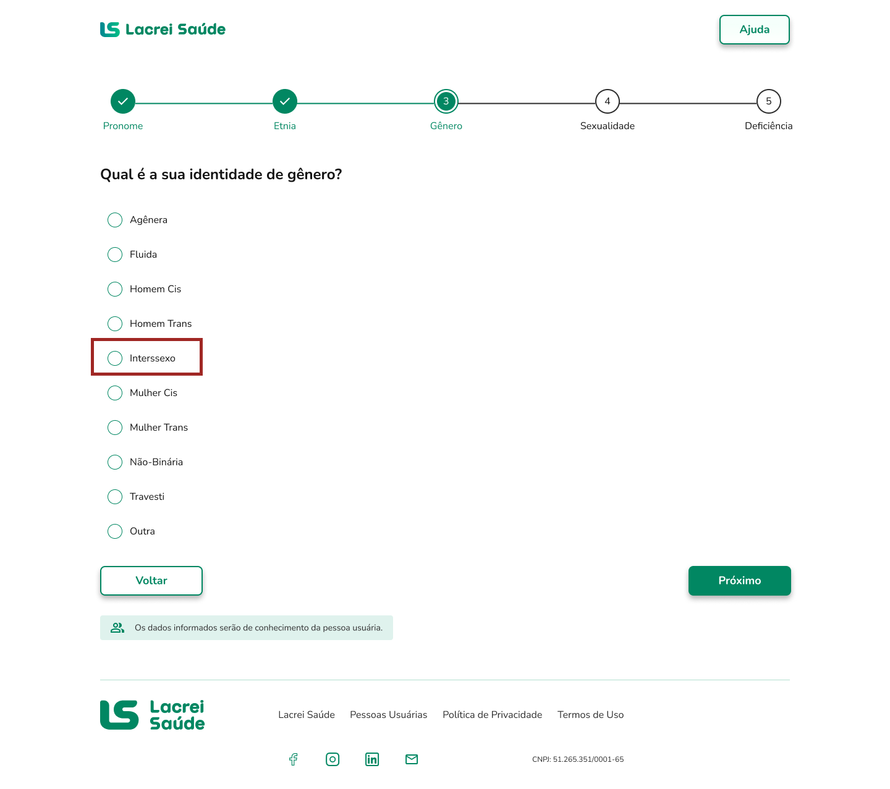
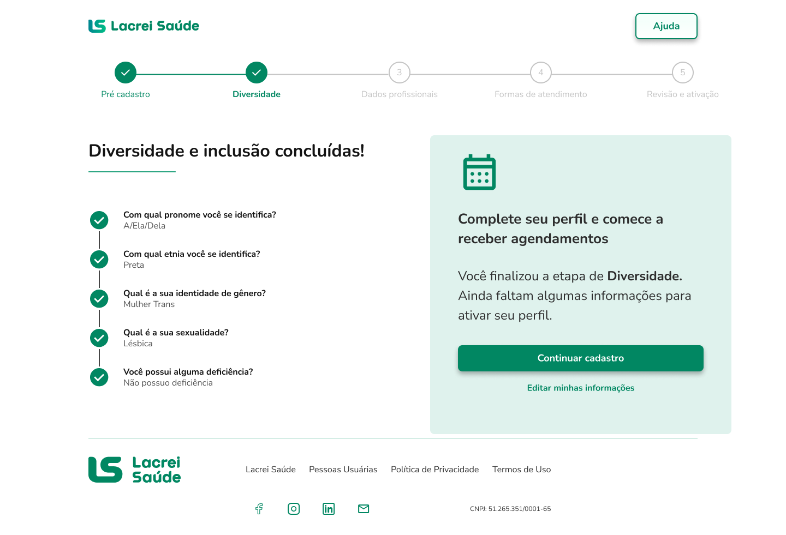

UX Research · UX/UI Design · 2026
Pesquisa de usabilidade de ponta a ponta




Contexto
A Lacrei Saúde conecta pessoas LGBTQIAPN+ a profissionais de saúde capacitados para um atendimento ético, seguro e acolhedor. A pesquisa investigou as duas pontas dessa experiência: como pessoas usuárias encontram e agendam atendimento e como profissionais cadastram, ativam seus perfis e ampliam sua possibilidade de captar novas pessoas pacientes.
02
jornadas investigadas
08
pessoas participantes
02
mudanças orientadas pela pesquisa
Meu papel
Planejei e conduzi o ciclo de pesquisa, do recrutamento à análise dos achados, transformando evidências em recomendações para orientar decisões de produto.
O desafio
Entender como pessoas usuárias encontram profissionais e constroem confiança para agendar, e como profissionais vivenciam o cadastro, a ativação do perfil e o valor de estar na plataforma.
O plano de pesquisa combinou diferentes métodos para entender comportamento, percepção e motivações. Nesta etapa, conduzi testes de usabilidade para observar navegação e autonomia.
Gravação real de uma sessão de teste de usabilidade com pessoa profissional.
A pesquisa investigou as duas pontas da plataforma e os principais momentos de cada experiência.
Pessoa usuária
Como encontra, confia e agenda com um profissional?
Login/Cadastro → Pós-cadastro → Busca → Contato
Pessoa profissional da saúde
Como cadastra, ativa o perfil e percebe valor na plataforma?
Pré-cadastro → Diversidade → Painel → Cadastro profissional
Para entender as duas pontas da plataforma, pesquisei com pessoas profissionais de saúde e pessoas usuárias da comunidade LGBTQIAPN+.
5
Profissionais de saúde
Médicas · Nutricionista · Dentista · Fisioterapeuta
3
Pessoas usuárias
Pessoas LGBTQIAPN+ que já haviam buscado atendimento em saúde
Os testes mostraram onde as jornadas ainda geravam dúvidas e onde a experiência podia melhorar. A partir desses achados, defini as principais recomendações para o produto.
"Achei que já tinha terminado."
4/5
profissionais acreditaram que haviam concluído o cadastro.
"Isso não é comum em plataformas de saúde. Faz com que se sinta mais seguro na consulta."
Identidade de gênero e sexo atribuído ao nascimento apareciam misturados no formulário de cadastro.

"Se tiver prontuário, receituário digital, upload de exames... aí eu pagaria."
4/5 profissionais acharam que já tinham terminado.

A tela passou a comunicar progresso, em vez de conclusão.
Recomendação implementada.
Nem todo achado precisa virar uma mudança imediatamente. Entender o momento do produto também faz parte de decidir o que vale priorizar.
Nem toda pergunta se responde da mesma forma. Ao longo da pesquisa, percebi que escolher o método certo é tão importante quanto o que queremos descobrir.
Encontrar as pessoas certas e conseguir que elas participem também influencia a pesquisa. No meu caso, o recrutamento acabou sendo parte importante do próprio processo.